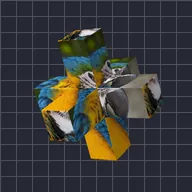

Croix à trois axes

Place le calque sur trois barres qui se croisent au centre.
Réglages
| Réglage | Type | Plage | Par défaut |
|---|---|---|---|
| Rotation X | Angle | De -3600° à 3600° | -25° |
| Rotation Y | Angle | De -3600° à 3600° | -35° |
| Rotation Z | Angle | De -3600° à 3600° | 0° |
| Longueur | Nombre | De 0.02 à 5 | 0.9 |
| Épaisseur | Nombre | De 0.01 à 2 | 0.22 |
| Lissage | Nombre | De 0 à 1 | 0.15 |
| Position | Point (X, Y) | De -5000 px à 5000 px | 0 px, 0 px |
| Échelle | Nombre | De 0.05 à 10 | 1 |
| Perspective | Nombre | De 0 à 1 | 0.5 |
| Ombrage | Nombre | De 0 à 1 | 0.6 |
| Angle de la lumière | Angle | De -3600° à 3600° | 135° |
| Brillance | Nombre | De 0 à 1 | 0.3 |
| Éclairage | Choix | Classique, Doux, Direct | Classique |
| Ambiant | Nombre | De 0 à 2 | 0.03 |
| Hauteur de la lumière | Nombre | De 0 à 20 | 3 |
| Couleur de la lumière | Couleur | – | #FFFFFF |
| Netteté du reflet | Nombre | De 1 à 200 | 15 |
| Texture | Choix | Ajuster, Mosaïque, Étirer | Ajuster |
| Répétition X | Nombre | De 0.01 à 100 | 1 |
| Répétition Y | Nombre | De 0.01 à 100 | 1 |
| Miroir | Activé ou désactivé | – | Désactivé |
| Angle de la texture | Angle | De -3600° à 3600° | 0° |
| Décalage de la texture | Point (X, Y) | De -100 à 100 | 0, 0 |
| Recadrage de la texture | Nombre | De 0.05 à 10 | 1 |
| Ancrage de la texture | Choix | Centre, Coin | Centre |
| Conserver le calque | Activé ou désactivé | – | Désactivé |
| Style | Choix | Classique, Standard | Classique |